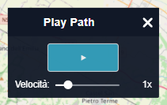
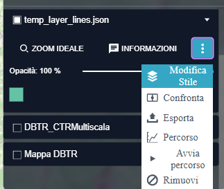
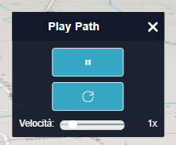

Play Path
Cos'è Play Path
Play Path è una funzionalità avanzata di rer3d-map che consente di visualizzare dinamicamente un percorso misurato sulla mappa 3D. Questa funzione permette di "volare" automaticamente lungo il tragitto definito, offrendo una visualizzazione immersiva dell'itinerario con movimento fluido della telecamera.
La funzione Play Path trasforma un percorso statico in un'esperienza di navigazione cinematografica, particolarmente utile per:
- Presentazioni di progetti e piani territoriali
- Analisi di percorsi e tracciati
- Visualizzazione di itinerari turistici o escursionistici

Come attivare Play Path
Per utilizzare la funzione Play Path è necessario seguire questi passaggi preliminari:
- Creare un percorso: Utilizzare gli strumenti di misura lineare
 per definire un percorso sulla mappa
per definire un percorso sulla mappa - Trasformare il percorso: Dal pannello dei grafici, cliccare sul pulsante "Trasformazione" per convertire il percorso in un layer nel workbench
- Accedere alle opzioni: Nel workbench, cliccare sull'icona con i tre puntini accanto al percorso trasformato
- Avviare Play Path: Selezionare "Avvia percorso (Play Path)" dal menu delle opzioni

Pannello di controllo Play Path
Una volta attivata la funzione, si aprirà il pannello di controllo Play Path che presenta i seguenti elementi:
Controlli principali
- Pulsante Play/Pausa : Avvia o mette in pausa la riproduzione del percorso
- Pulsante Stop : Interrompe la riproduzione e riporta la telecamera al punto di partenza
Controllo velocità
Il pannello include uno slider per regolare la velocità di riproduzione:
- Range: da 0.5x a 3.0x la velocità normale
- Incrementi: 0.1x per una regolazione precisa
- Indicatore: mostra il valore corrente della velocità

Funzionamento automatico
Selezione del punto di partenza
Il sistema determina automaticamente il punto di partenza del percorso analizzando la posizione attuale della telecamera:
- Calcola la distanza dalla telecamera a entrambi gli estremi del percorso
- Seleziona come punto di partenza l'estremo più vicino alla posizione attuale
- Imposta automaticamente la direzione di percorrenza (normale o inversa)
Ottimizzazione del percorso
Prima della riproduzione, il sistema applica diversi algoritmi di ottimizzazione:
- Semplificazione: Riduce i punti ridondanti mantenendo la forma del percorso
- Interpolazione: Aggiunge punti intermedi per garantire un movimento fluido
- Campionamento adattivo: Utilizza i punti campionati dal sistema di misura per maggiore precisione
Countdown di avvio
Al primo avvio della riproduzione (ma non quando si riprende una riproduzione in pausa), viene mostrato un countdown di 3 secondi che consente all'utente di prepararsi alla visualizzazione ed eventualmente liberare la schermata da pannelli superflui.
Controllo della telecamera
Movimento automatico
Durante la riproduzione, la telecamera si muove automaticamente:
- Posizionamento: La telecamera segue il percorso punto per punto
- Orientamento: L'orientamento viene calcolato in base alla direzione del percorso
- Distanza: Mantiene una distanza appropriata dal terreno per una visualizzazione ottimale
- Inclinazione: Regola automaticamente l'angolo di visuale (pitch) per seguire il terreno
Requisiti di inclinazione
Per il corretto funzionamento di Play Path, è necessario che la telecamera abbia un'inclinazione minima:
- Inclinazione minima richiesta: 45° (π/4 radianti)
- Avviso automatico: Se l'inclinazione è insufficiente, viene mostrato un messaggio di avviso
- Blocco funzione: Il pulsante Play è disabilitato se l'inclinazione è troppo bassa
Gestione dello stato di riproduzione
Stati della riproduzione
- Fermo: Percorso non avviato, telecamera nella posizione iniziale
- In riproduzione: Telecamera in movimento automatico lungo il percorso
- In pausa: Riproduzione interrotta temporaneamente, posizione mantenuta
- Movimento manuale: L'utente sta spostando manualmente la telecamera
Ripresa della riproduzione
Quando si riprende una riproduzione dopo una pausa:
- Non viene mostrato il countdown
- La riproduzione riprende dal punto in cui è stata interrotta
- Vengono mantenute tutte le impostazioni di velocità
Sincronizzazione con il caricamento tiles
Play Path include un sistema avanzato di sincronizzazione con il caricamento dei dati della mappa:
Monitoraggio del progresso
- Indicatore percentuale: Mostra la percentuale di tiles caricati
- Attesa automatica: La riproduzione attende che ogni frame sia completamente caricato
- Modalità indeterminata: Gestisce situazioni in cui il progresso non è quantificabile
Ottimizzazione delle prestazioni
Il sistema implementa diverse strategie per ottimizzare le prestazioni:
- Attende il caricamento completo prima di passare al punto successivo
- Monitora lo stato di caricamento in tempo reale
- Evita movimenti quando i dati non sono ancora disponibili
Gestione degli errori e casi particolari
Controllo automatico dei percorsi
- Cambio percorso: Se viene selezionato un percorso diverso, Play Path si resetta automaticamente
- Percorsi vuoti: La funzione viene disabilitata se non ci sono punti sufficienti
- Interruzione forzata: È sempre possibile interrompere la riproduzione in qualsiasi momento
Gestione della finestra
Il pannello Play Path è completamente mobile e ridimensionabile:
- Trascinamento: Il pannello può essere spostato liberamente nella finestra
- Vincoli: Il movimento è limitato ai bordi della finestra del browser
- Dimensioni adaptive: Si adatta automaticamente alle dimensioni del contenuto e del dispositivo
Consigli per l'utilizzo ottimale
Impostazioni della telecamera
- Posizionare la telecamera con un'inclinazione adeguata prima di avviare
- Assicurarsi di avere una buona visuale del punto di partenza del percorso
- Evitare di manipolare manualmente la telecamera durante la riproduzione automatica
Ottimizzazione delle prestazioni
- Utilizzare velocità moderate (1x-2x) per percorsi complessi
- Attendere il caricamento completo dei dati prima di avviare percorsi lunghi
- Chiudere pannelli non necessari per migliorare la visualizzazione della presentazione
Integrazione con altre funzionalità
Play Path si integra perfettamente con le altre funzionalità di rer3d-map:
- Strumenti di misura: Utilizza i percorsi creati con gli strumenti di misura lineare
- Workbench: Richiede la trasformazione del percorso in layer tramite il workbench
- Esportazione: I percorsi visualizzati possono essere esportati nei formati standard